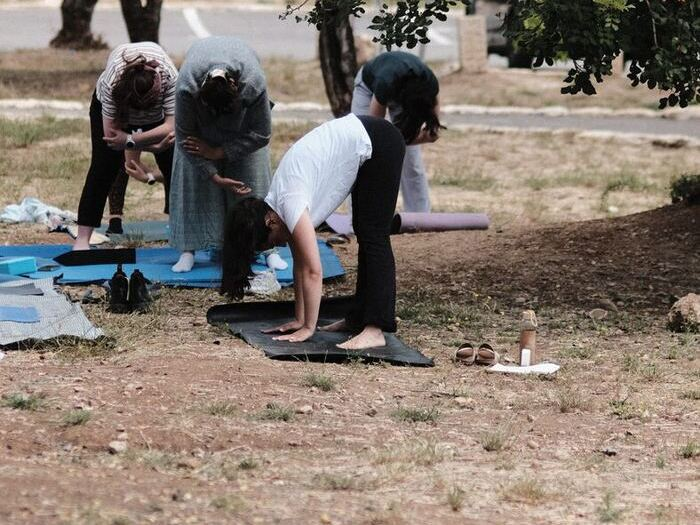
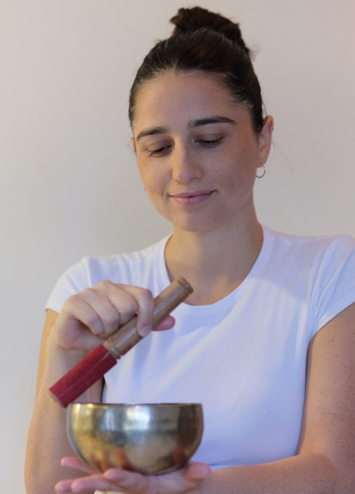
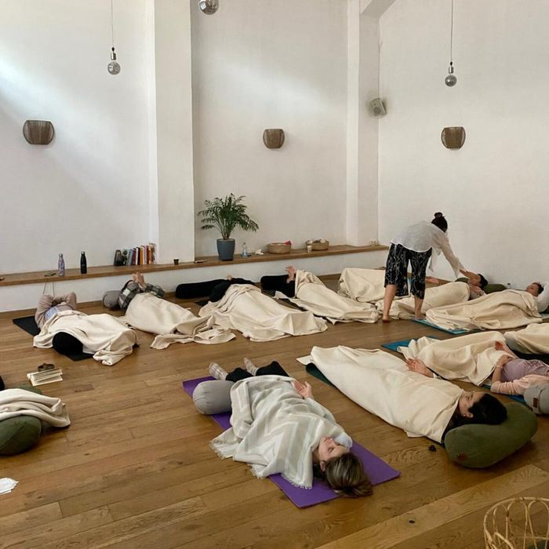
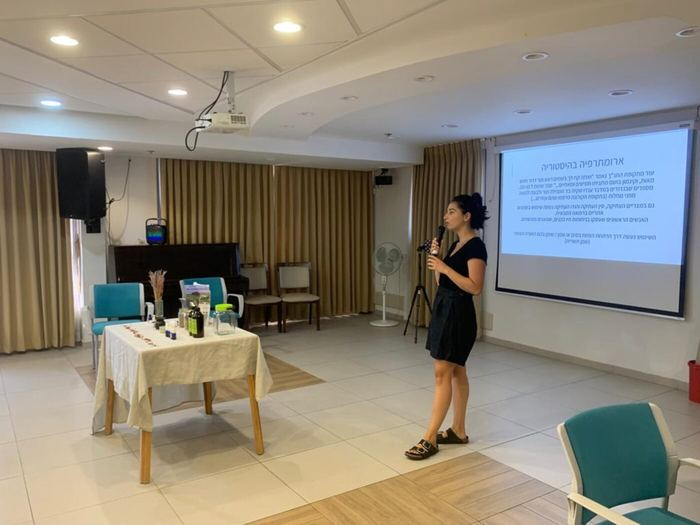
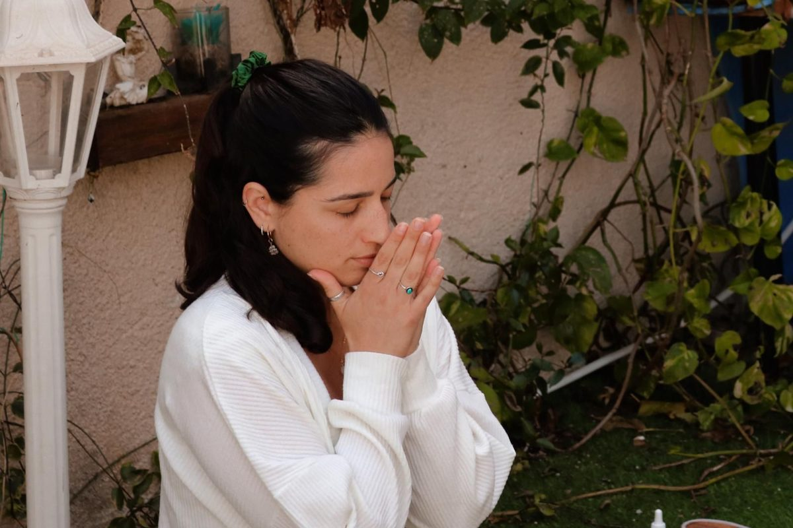

האטה יוגה
סגנון מדויק ועדין, המתאים לכל גיל ורמה. בתרגול הפיזי התנוחות מתבצעות בקצב איטי, תוך הקשבה לגוף והעמקת המודעות. הדגש הוא על יציבה נכונה, גמישות, חיזוק והרפיה, בשילוב טכניקות נשימה מודעת.
להזמנת סדנהדרך עתיקה המשלבת תנועה, נשימה מודעת ומדיטציה, לחיבור עמוק בין הגוף והנשמה. בשבילי, יוגה היא ממש לא ״עוד אימון כושר״ — זה המקום שבו לומדים להשקיט את המחשבות, לחבר בין הגוף לנפש, ולגלות שאפשר לפעול ולהתקדם בעולם גם מתוך הרפיה.
כמטפלת הוליסטית מנוסה, אני מביאה לתרגול היוגה ראייה רחבה ומעמיקה של הגוף והנפש. שילוב הידע המקצועי שלי מעולם הרפואה הטבעית מאפשר לי להתאים את התרגול באופן מדויק לצרכים האישיים שלך.
בין אם את מתמודדת עם כאבים כרוניים, מתח נפשי, אתגרים רגשיים או פשוט מחפשת דרך להעמיק את הקשר עם עצמך — תרגול מותאם אישית המשלב את חכמת היוגה זה הפתרון בשבילך.


סגנון מדויק ועדין, המתאים לכל גיל ורמה. בתרגול הפיזי התנוחות מתבצעות בקצב איטי, תוך הקשבה לגוף והעמקת המודעות. הדגש הוא על יציבה נכונה, גמישות, חיזוק והרפיה, בשילוב טכניקות נשימה מודעת.
להזמנת סדנה
משלבת את חכמת היוגה העתיקה עם הבנה מעמיקה של הגוף. מתאימה במיוחד למתמודדות עם כאבים, מתח, חרדה או אתגרים פיזיים ורגשיים אחרים. כל מפגש מותאם לצרכים האישיים של המתרגלת.
להזמנת סדנה
תרגול נגיש ועדין שמתבצע ברובו או בכולו בישיבה על כיסא, לפי יכולות המשתתפים. לשיפור יציבות ושיווי משקל, שיפור טווחי תנועה וגמישות, הפחתת מתחים ונשימה מודעת.
תרגול בקבוצה קבועה — למשל במועדון הוותיקים.
להזמנת סדנה
בתרגול אישי יש מקום לדברים שדורשים תשומת לב אישית — כאב או פציעה מסוימים, מחלה כרונית או מצב רפואי, ומה שחשוב לך לעבוד עליו. כל שיעור נבנה סביב הגוף שלך ומה שהוא צריך באותו יום.
על מה נעבוד יחד: שיפור היציבה והגמישות · הפחתת מתחים וכאבים · העמקת הקשר בין הגוף והנפש · למידת כלים לאיזון והרגעה · פיתוח תרגול אישי מותאם לך.
לנשים, באזור עמק האלה — אצלי או בבית המתרגלת — וגם בקליניקה שלי בתל אביב.
לתיאום תרגול אישי